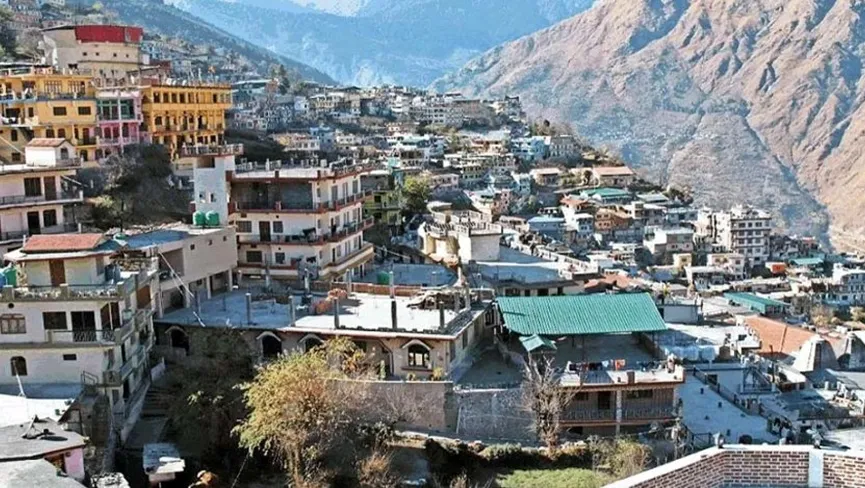
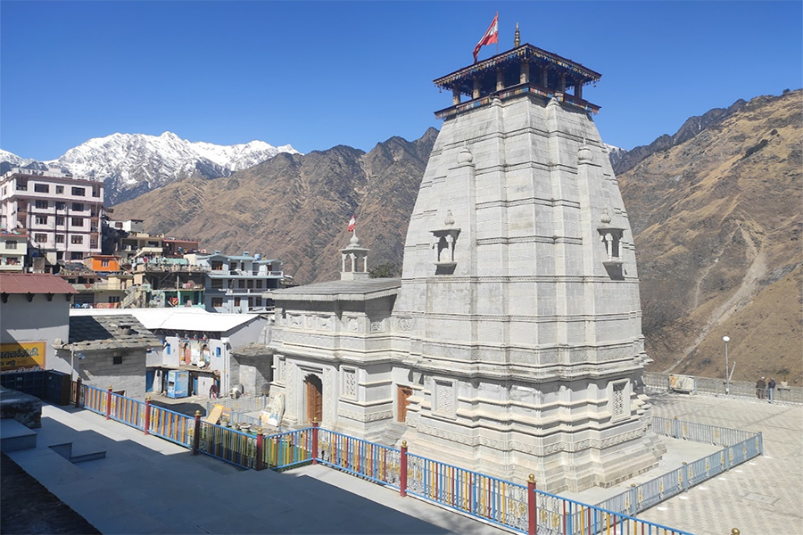
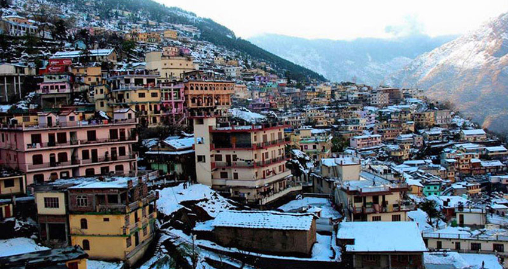
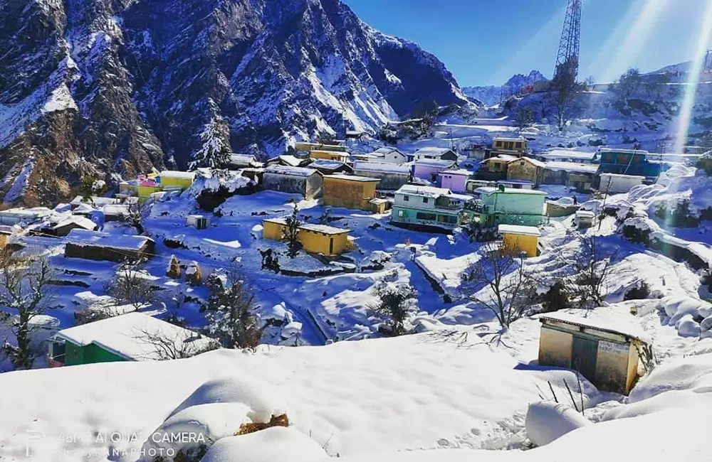
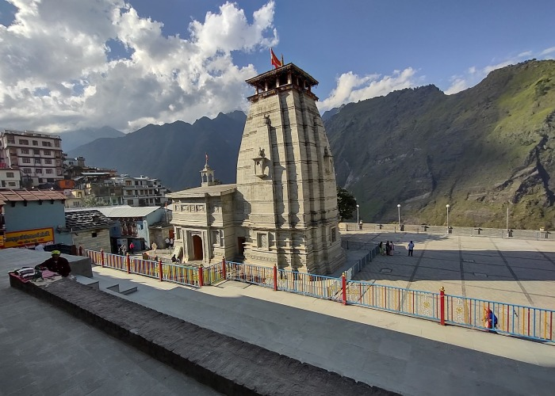

Joshimath (also known as Jyotirmath) is a historic and spiritually significant town in the Chamoli district of Uttarakhand, serving as the winter seat of Lord Badrinath and one of the four cardinal mathas established by Adi Shankaracharya in the 8th century. Situated at an elevation of about 1,875 meters along the Alaknanda River valley, Joshimath is revered as the "Gateway to the Himalayas" — the base for major pilgrimages to Badrinath, Hemkund Sahib, Auli, Valley of Flowers, and the Nanda Devi region. The town is home to the ancient Jyotirmath (one of the four peeths founded by Shankaracharya), where the sacred idol of Lord Badrinath is kept during winter closure, along with other revered temples like Narsingh Temple (where Lord Vishnu is worshipped in his lion-man form) and several ancient shrines.
Surrounded by lush pine, deodar, and rhododendron forests with stunning views of snow peaks like Nanda Devi and Neelkanth, Joshimath blends deep spiritual heritage with natural beauty and adventure access. It's the starting point for the thrilling Joshimath–Auli ropeway (Asia's longest), winter sports in Auli, and treks to hidden valleys. The town's ancient Narasimha Temple holds a unique legend: the deity's hand is believed to be slowly sinking into the ground, signaling the end of Kali Yuga when it fully disappears. Despite recent challenges like land subsidence, Joshimath remains a vibrant pilgrimage hub, offering peace, cultural richness, and the raw Himalayan energy that has drawn saints, yogis, and seekers for centuries.
March to June for pleasant weather, blooming rhododendrons, and easy access to Auli/Badrinath; September to November for clear skies, post-monsoon freshness, and sharp Himalayan views with fewer crowds. Avoid heavy monsoon (July–August) due to landslides and road risks. Winter (December–February) offers snow charm and proximity to Auli skiing, but many roads to higher areas may close. Early mornings provide peaceful temple visits and better visibility.
Jyotirmath (Adi Shankaracharya's matha), ancient Narsingh Temple with sinking-hand legend, Badrinath winter idol darshan, Asia's longest Joshimath–Auli ropeway for aerial Himalayan views, nearby hot springs (Tapovan), short treks to local viewpoints, and gateway access to Hemkund Sahib, Valley of Flowers, Auli skiing, and Badrinath yatra — perfect for spiritual pilgrimage, photography, adventure, and soaking in mountain serenity.
Book accommodations and ropeway tickets early (especially peak pilgrimage/season), acclimatize before heading to higher altitudes like Auli/Hemkund, wear modest clothing for temple visits, carry warm layers (evenings cold year-round), respect local customs and sanctity (no photography inside some shrines), use local guides for treks or history insights, avoid littering in this fragile Himalayan town, and plan day trips to Auli or Badrinath for a fuller experience.
"Joshimath stands as the quiet sentinel of the Garhwal Himalayas — where ancient mathas whisper Shankaracharya's wisdom, the Alaknanda flows with eternal patience, and every mountain vista reminds the pilgrim that the divine is not reached by speed, but by the slow, sacred unfolding of faith in the heart of the peaks."